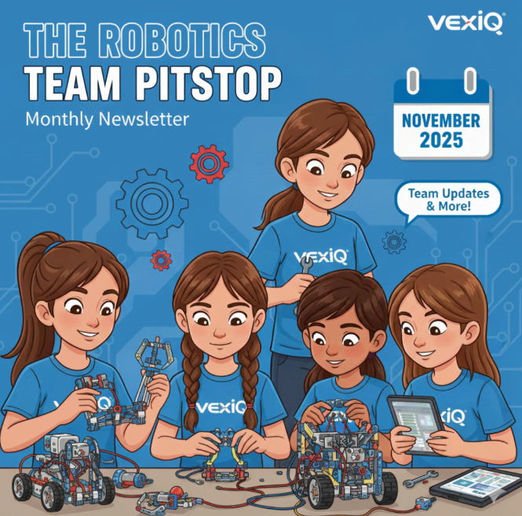
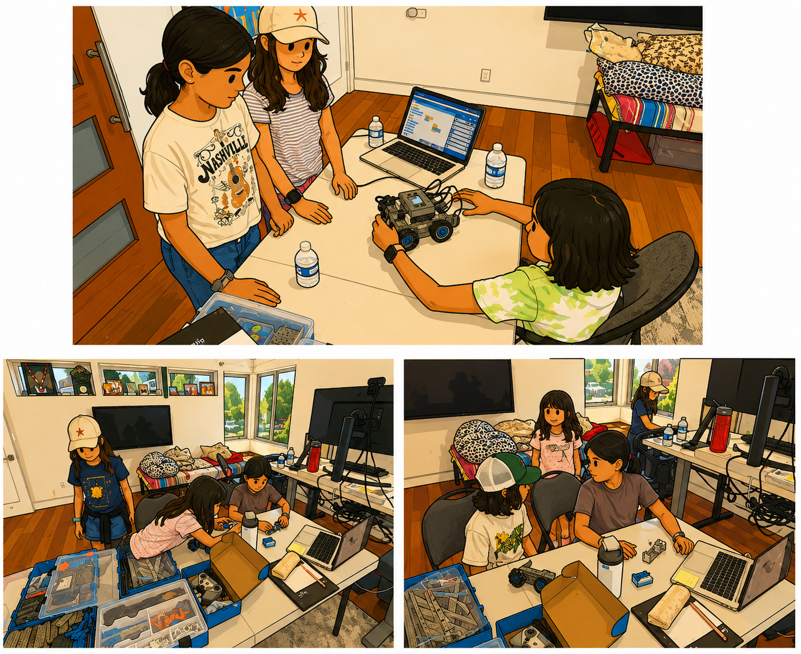
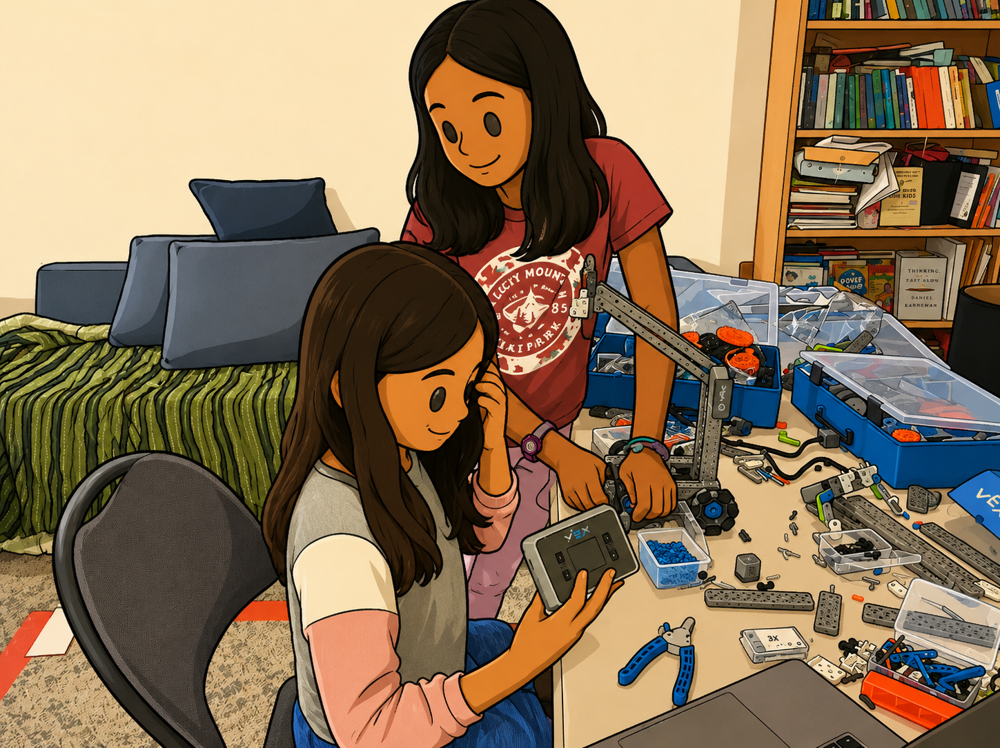
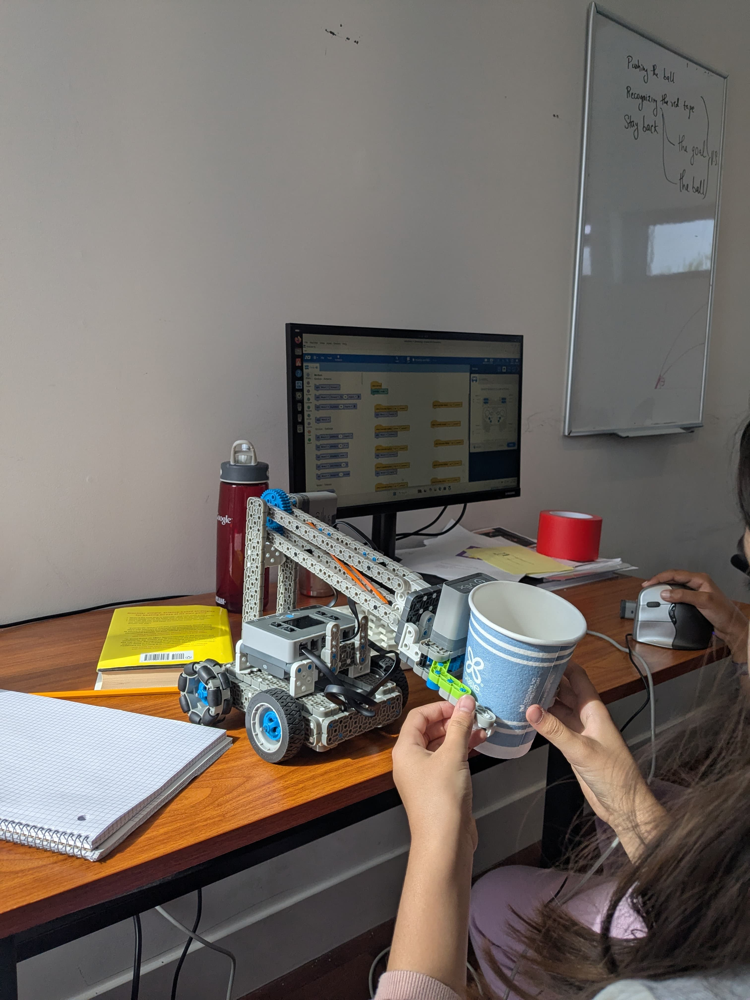
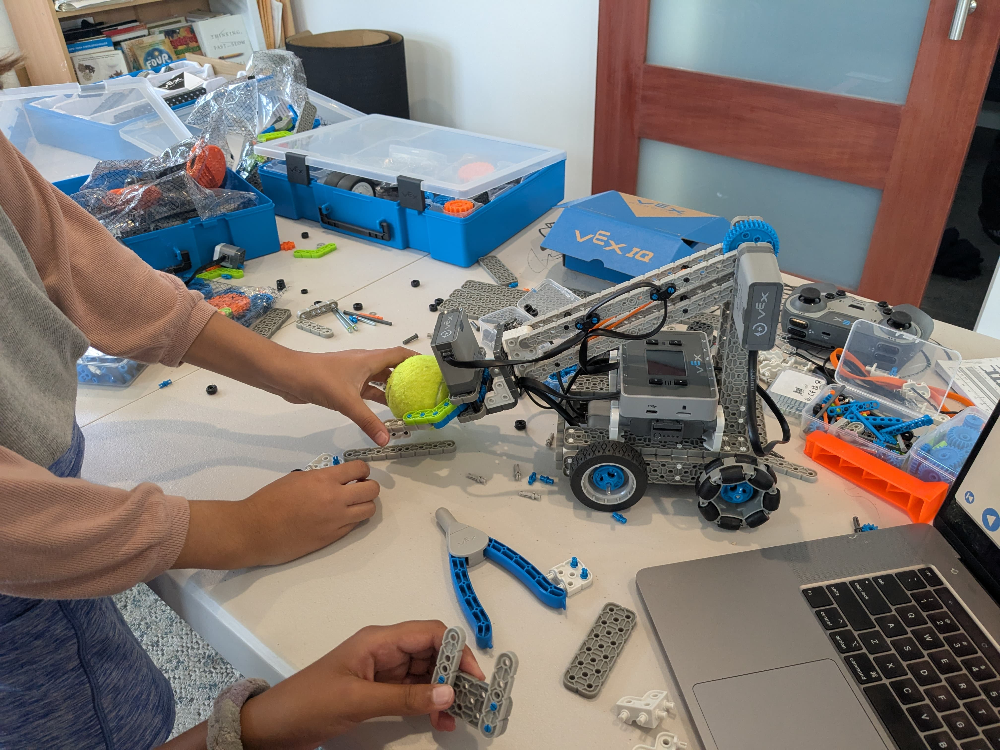
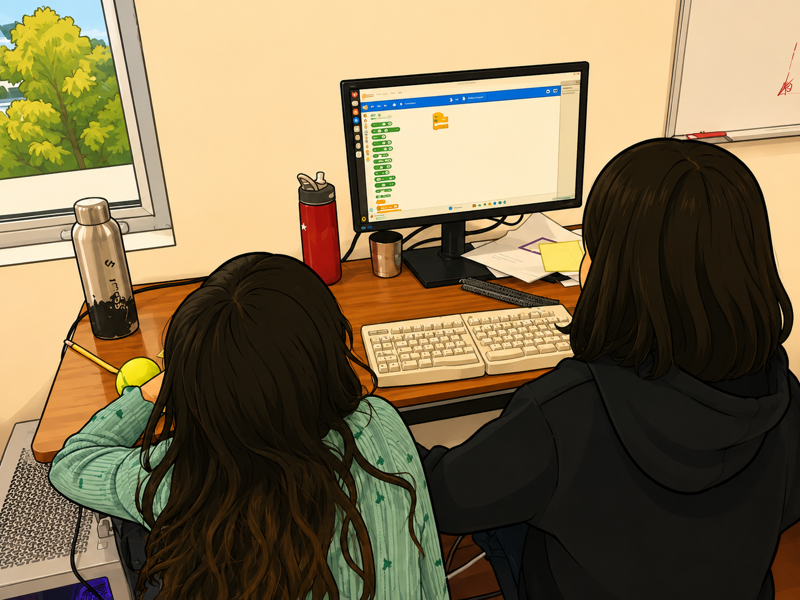
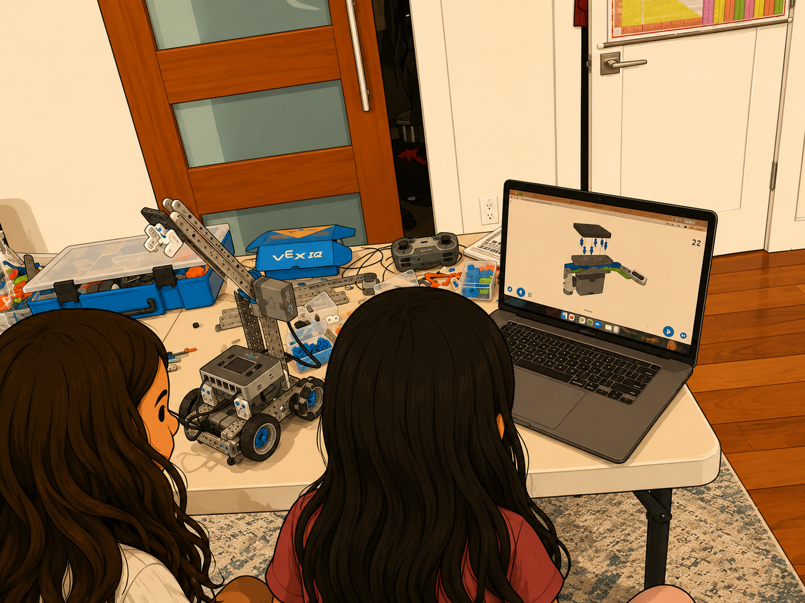

Fairmeadow Robotics Newsletter #1
A monthly update from our friendly neighborhood Fairmeadow Robotics Team.
By Manisha Verma· Nov 30, 2025

Why are we doing this?
The world as we know it is changing rapidly. Careers and professional journeys are being redrawn by the day. When things settle down post-AI, a “career” will look very different from what previous generations have gotten used to. The purpose of the Fairmeadow Robotics program is to help kids thrive in the post-AI world.
But why Robotics? Robotics training equips our children to become the innovative leaders the future needs. By learning to problem solve and build, they develop the critical thinking and nimble, entrepreneurial skills required to successfully navigate and solve complex, real-world challenges.
All of this may seem like too much to expect from 10-year olds, but it’s never too early to teach building projects of increasing scope by iterating through failures!
Roadmap for the Fairmeadow Robotics Team
This is a bright and hungry batch of kids who have already come a long way in their first 3 months of robotics and programming! Our original plan was to utilize this year towards skill building and prepare the kids to go competitive next year (2026-2027 academic year). We are seeing every sign that skill building is going well and the kinds will be ready / yearning to compete alongside other local and regional teams by next summer if not sooner. Ultimately it will be the children’s choice about if and when they decide to go competitive.
About the VEX Competition Track
VEX and First Lego League (FLL) and the most recognized robotics competitions for school going kids around the world. They both are very comparable and excellent choices, and choosing one over the other is mostly a preference of parts (legos vs robotics parts) and progression (unlike FLL, VEX progresses beyond middle school).
VEX Competitions evaluate children using a holistic framework where robotics is at the core but not everything. For example, the kids will need to give presentations on their ideas, answer Q&A from judges, present their “rough” work as captured in the engineering design notebooks, etc. This is why we love VEX! We believe that the robotics program has the potential to be so much more than robotics, and it’s exciting to see the kids grow in all these realms.
Preparation for Competitive Track
VEX IQ Competitive Track is played on a 6 by 8 foot board using a unique goal or challenge for that year. For example, check out the 2025-2026 challenge “mix and match” here.
Doing well on the competitive track broadly requires following types of skills:
- Robotic assembly and operating skills ( mechanical engineering)
- Programming skills. The competition includes a controller operated section and an autonomous section - the latter requiring more advanced programming skills.
- Being organized through detailed note taking, visual engineering design, etc.
- Presentations about your work, e.g. “how I built this”. What were the challenging parts? What ideas or designs did not work? How did we research the problem?
- Operating in a more ambiguous setting. One of the scoring sections of the competition requires 2 teams to be sharing the same board and cooperate to score points. Cooperating with a team that you’ll be meeting for the first time in a competition setting is hard! Therefore it’s helpful to make assumptions about how each team will operate in this ambiguous setting.
We have so far focused heavily on #1 and #2, and in December, we will expand to #3. Starting January, we will be recording interviews with each child about #4, providing feedback, and sharing with respective parents. #5 is more context specific and we will pick it up next fall when the 2026-2027 challenge is announced.
Roadmap
Between Dec’25 to Mar’26 we will focus every month on a unique problem relating to mechanical engineering problems in robotics. The problems are laid out in the detailed roadmap section below, but the objective is for children to become well versed and independent in building sub-systems of a usable robot.
In April’26 and May’26, we plan to acquire a prior year robotics challenge set and use that to give the team a flavor of what it takes to build a project that’s able to compete.
As a fun activity, starting in Jan’26, we will also organize a few “field trips” on weekends to take the kids to local VEX IQ robotics competitions at Gunn High to familiarize them with the competition environment and the energy in the room!
Our Workshop

Sep – Nov 2025
The first three months of the Robotics program focused on:
- Basic Mechanical Principles: completing core VEX IQ robotics projects.
- Programming: using Scratch-style programming through VEX IQ.
- Core Robot Builds: learning beginner robot templates.
- Sensors: using distance, optical, and push-button sensors.
- Teamwork: organizing in pairs and helping each other build components.

Curriculum from Dec 2025 to May 2026
Dec 2025: Mini-Arm / End-Effector
Students will extend the Clawbot design with an additional degree of motion: lifting a cube, rotating it, and placing or stacking it.
Jan 2026: Back-Mounted Intake Roller
Students will explore intake rollers, conveyor belts, rubber bands, and ball collection mechanisms.
Feb – Mar 2026: Mechanical Pattern Exploration
- Side Arm / Pusher-Sweeper
- Lift-Assist / Elbow Joint
- Deployable Hook or Dropper
April – May 2026: Prior Year Build
The team will explore a prior-year VEX IQ challenge to understand what it takes to build a competition-style robot.
Throwback to Classroom Learnings

Clawbot for Beginners
The girls built an advanced clawbot from scratch.

Programmable Bot
The girls programmed a color sensor for the clawbot.


Thank You
Thank you for being a part of this journey. Let’s continue to support and encourage our kids.